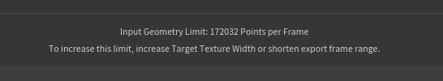

Week6
HOUDINI PARTICLES TO UNREAL
Feb 15
HAVE COMPLETED:
TO-DO LIST:
-
Tested Opacity mask in Houdini and Unreal
-
Test whole pipeline from Houdini to Unreal.
-
Create a sea if flowers using Yichen's Grape Hyacinth
I imported Itim's GS trees to Unreal. (Particles)
Houdini VAT: Common Limitations (Official): The limitations of VAT include: texture memory budget on lower-end hardwares, the lack of animated collisions, and relatively limited real-time interactability.

In Houdini, there are recommendations for the number of points per frame for different widths of texture.
Once the poly count is stable, the VAT animation usually doesn't have any problems.
SHOT EXPLORE:
This week, we mainly focused on defining specific shots and integrating Gaussian Splatting and plant simulations in Houdini to make them look more consistent. So I generated some references from AI. Our basic concept is to transition from micro plants to a huge environment. This quarter, we are mainly focusing on Shots 1, 3, and 4.
This is AI-generated — Shot 1 and Shot 2 transition.
-
Conduct further research on VAT animation.
-
Work on exploring Unreal shader for plants and lighting